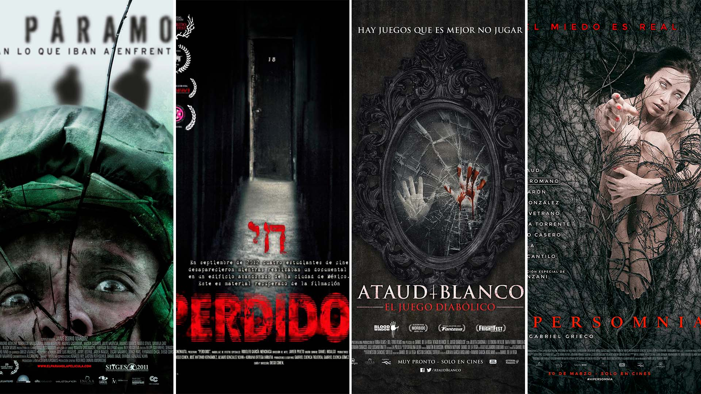

El género de terror es muy amplio, dentro de él se encuentran muchos subgéneros, cada uno con sus propias características. Es real que además muchos de estos se fusionan para entregarnos grandes producciones tanto en cine como en televisión. Es por eso que los hemos desglosado para que todo amante del género sepa sus principales características.
Este es uno de los géneros más consumidos. Su característica es la presencia de un psicópata que asesina brutalmente principalmente a adolescentes y jóvenes adultos, que se encuentran realizando actividades que son de moral cuestionable. Grandes exponentes de este subgénero son Halloween, la saga de Freddy Krueguer, la de Jason, Scream y I Know What You Did Last Summer.
.jpg)
En este caso lo que suele ser clave es que las historias transcurren en entornos naturales, poco explorados y que tienen un vínculo con cuestiones mucho más tradicionales. Este tipo de terror profundiza en lo antiguo e inexplicable; muchas transcurren en un terror diurno; además, se meten de lleno en rituales paganos. Ejemplos de esto son The Wicker Man (1973), y más actuales tenemos a Midsommar (2019) o la serie The Third Day (2020).
.jpg)
Uno de los que más se fusiona con muchos de los otros subgéneros. Y es que el terror gore se caracteriza por muchísima violencia al punto que para muchos se vuelve intolerable. Tengan en cuenta que se destaca por ser bastante gráfico por lo cual en escena tenemos todo tipo de mutilaciones, tortura, desmembramientos, cortadas y mucha sangre. Algunas películas de este subgénero son las sagas de Saw y Hostel. Aunque también hay algunas muy extremas como el caso de Martyrs (2008).
.jpg)
Este es el subgénero más común. Si bien al género de terror también se lo suele llamar horror, la diferencia es que este se trata de cuestiones paranormales, ya sean presencias, fantasmas, posesiones o todo lo que sea justamente, como mencionamos, paranormal. Hay grandes exponentes en series y televisión como The Exorcist (1973), The Conjuring (2013) y The Haunting of Hill House (2018).
Ok, esta temática podría ir dentro de horror, pero ya se la puede considerar un subgénero en sí mismo. ¿Qué agregar? Historias donde los muñecos son el peligro de la historia. El primer gran exponente es Chucky (toda su saga y serie), pero tenemos películas como Dead Silence (2007), The Boy (2016) y por supuesto Annabelle.
.jpg)